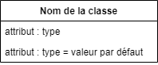

Normes du diagramme de classes
On utilise un modèle objet pour représenter les entités qui constitueront la base de données. Ce modèle, souvent employé lors de la phase d’analyse, permet de synthétiser l’information d’un énoncé de besoins en un diagramme sans se préoccuper des spécificités liées à l’implémentation d’une base de données. Ces spécificités sont traitées dans la phase subséquente de conception où le modèle objet est transformé en diagramme d’entités-relations.
Définition des types de données
Les types de données dans un diagramme de classes sont représentés par une boîte séparée en deux sections. La section du haut contient le nom de la classe en gras, puis la section du bas les attributs de la classe. Un attribut est simplement déclaré avec son nom suivi du symbole deux points ( : ) puis de son type. Si l’attribut possède une valeur par défaut, celle-ci est indiquée après la présence du symbole d’égalité ( = ).
Les classes à cette étape représentent les types données exprimées dans le [langage courant]{Donc excluant les contraintes et les formes normales.}. De plus, les types de données peuvent être larges (entier au lieu de SMALLINT par exmeple). L’application des formes normales et la normalisation des relations (en particulier les relations N à M) entraîneront l’apparition de nouvelles tables et la réécriture de certains attributs. Ce passage se fera sur le DER.

Gestion des relations
On retrouve principalement deux types de relations dans un diagramme de classes, les relations d’héritage et les relations d’utilisation:
- La relation d’héritage entre deux types est représentée par une flèche dont la tête est vide et qui pointe du spécialisé vers le type général (type enfant vers le type parent).
- La relation d’utilisation est représentée par un trait plein sur lequel apparaît le nom de la relation. Il s’agit habituellement d’un verbe conjugué. Si le sens de l’application de la relation n’est pas clair, un triangle (ou un chevron) peut être placé à côté du nom de la relation pour indiquer dans quel sens elle doit être lue. Des cardinalités peuvent être inscrites sur certaines relations. On utilise la technique présenté pour les diagrammes de classe de conception.


Types de flèches
On peut utiliser tous les types de flèches présentés dans la section sur le diagramme de classe de conception. Par contre, comme le diagramme sera réécrit en diagramme d’entités-relations dans l’étape de conception de la base de données. On utilise généralement que les deux types de flèches présentés ci-dessus afin de se concentrer sur le lien entre les données que sur l’utilisation de la bonne catégorie de relation.
Gestion des contraintes
Un élément important à tenir compte dans la modélisation d’une base de données est la présence de contraintes sur les éléments, en particulier les attributs. Pour représenter de telles contraintes, on les inscrit à côté de l’attribut entre accolades ( { } ). Les contraintes peuvent prendre la forme d’une indication complémentaire ou d’une valeur booléenne qui doit être respectée. Le tableau ci-dessous détaille les principaux types de contraintes.¸
| Contrainte | Nom de la contrainte | Description |
|---|---|---|
| id | identifiant unique | la valeur sera non nulle et différente pour chaque instance. |
| unique | valeur unique | la valeur sera différente pour chaque instance. La valeur nulle peut être répétée. |
| not null | valeur non nulle | la valeur doit non nulle pour chaque instance. |
| x [> | >= | <= | < | <>] y | valeur restreinte | l’attribut x doit respectée une contrainte selon y. |

En analyse de système objet
On peut aussi utiliser le modèle objet pour la modélisation de la couche métier du système. Ce modèle permet une première représentation des objets utilisés dans le système, sans se préoccuper de l’implémentation. Un diagramme objet utilisé dans ces circonstances est appelé modèle du domaine.
Pour en savoir plus : | Modèle de domaine
 Documentation
Documentation

-
Le terme anglais Class diagram fait parfois référence au diagramme de classes de conception. Le modèle objet se différencie du diagramme de classe de conception par l’absence d’opération et l’absence de blocs dans la structure de classe. ↩